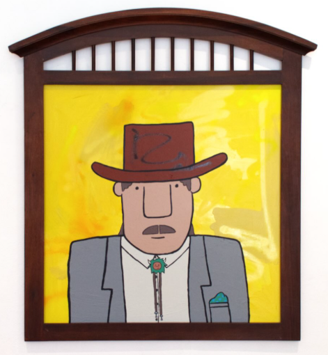

PENNY PINCH DUTCH AUCTION… The 4th (and final) EDITION
Join us on Friday from 5pm-10pm for the 4th edition of the Penny Pinch Dutch Auction
VSG is thrilled to announce the return of the Penny Pinch Dutch Auction, with Chicago-based street artist Penny Pinch.
Featured in The New York Times & The Economist….
The exhibition will utilize a Dutch Auction format, commonly used for perishable goods, such as flowers, fish & produce…. almost never with art.
These paintings will be available for sale at the highest asking price first, followed by consecutive price drops until every work in the exhibition is sold. There is no price minimum or reserve.
This Week’s Schedule:
Thursday:
4pm: All items released online at the base price of $2,500